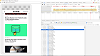

-
Analysis of HyperText Transfer Protocol and its Variants
Our first/minor project that was accepted at 2 conferences. Swag! B-)
-

Optimization of Critical Resources of a website
Final project open for reviews
-
Collaboration and Team Work
Makes work so much easier
-
 Pizza party
Pizza party
We owe it to ourselves

Bhawna Jain
Project Member